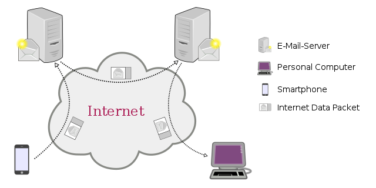

Conceptes bàsics
El correu electrònic, també conegut com a email o e-mail (de l'anglès electronic mail), és un servei de xarxa que permet als usuaris enviar i rebre missatges.mitjançant xarxes de comunicació electrònica.
Aquest servei es basa en un model d'emmagatzematge i reenviament, de manera que no és necessari que ambdues parts estiguin connectades simultàniament.
Aquests missatges poden ser escrit des d'ordinadors o des de mòbils, per exemple.
El correu electrònic es pot utilitzar per enviar no només text, sinó tot tipus d'arxius digitals, encara que solen existir limitacions a la mida dels arxius adjunts.
Adreça de correu electrònic
L'adreça de correu electrònic és on podem enviar els missatges. Podem dir que és equivalent a la bústia de correu electrònic, que és un espai físic reservat en el nostre servidor de correu electrònic.
Una direcció té dues parts:
- Davant de l'arrova: serà el nostre compte d'usuari, que ha de ser única dins del servidor.
- Darrere de l'arrova: identificarà al servidor.
En el nostre cas, el servidor serà iesalcudia i el nostre compte d'usuari serà identificada pel login que apareix davant de l'arrova i que no podem compartir amb cap altre usuari.
Consell
És important establir una contrasenya segura per al nostre correu electrònic, que no conegui ningú, així com recordar-nos de tancar la sessió sempre que utilitzem un ordinador compartit, per exemple, els ordinadors de l'aula.
En aquest enllaç pots veure els consells de Google per a crear una contrasenya segura.
Servidor de correu electrònic

Un servidor de correu electrònic és un maquinari informàtic que gestiona l’enviament, la recepció i l’emmagatzematge de correus electrònics. La seva tasca és molt similar a la d’una oficina de correus digital, ja que ha de processar i dirigir els missatges d’un remitent a un destinatari a través d’una adreça, encara que en aquest cas sigui digital en lloc de postal. La seva importància rau en la seva capacitat per permetre que els missatges arribin de manera ràpida i segura a qualsevol part del món.